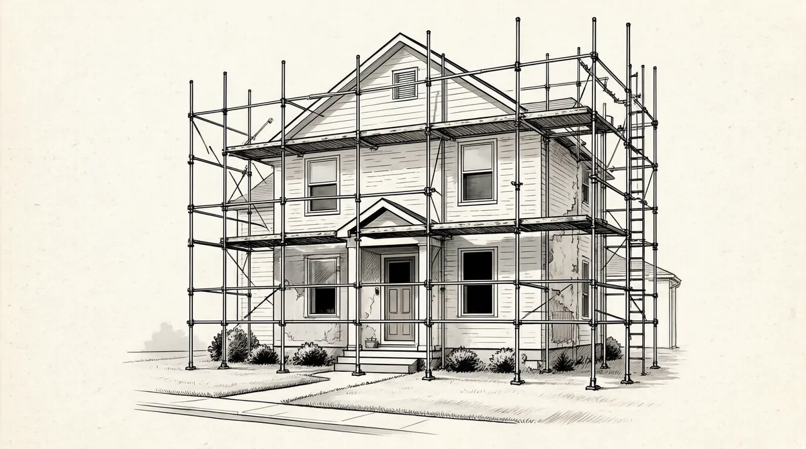

第28章 干燥的火种

“父亲去世时，地球重力似乎彻底改变了，”多丽丝回忆道，“所有的一切飘向了空中。父亲是这个家的核心，而现在这个核心消失了。”
最近几年，利拉遭受了多重打击。她的母亲斯特拉1960年在诺福克州立医院病逝，而妹妹伯妮丝紧接着于第二年死于骨癌。现在没有了霍华德，利拉需要找到一个新的目标，她开始变得依赖沃伦和苏珊一家。孙子们星期天会来她这边，她会给他们很多糖在做礼拜时吃，然后会带他们出去吃午饭，如果他们能够正确地计算账单数额，还可以得到钱。下午，利拉就带他们去伍尔沃斯百货商店买上一个玩具，然后祖孙几个整个下午就待在她的屋子里玩玩具。和霍华德付钱让孩子们去教堂一样，利拉也找到了解决寂寞问题的巴菲特式的方法——和孙子辈们交易，这样他们就会尽可能长时间地和她待在一起。
对多丽丝和沃伦而言，有霍华德在场才能够忍受和利拉在一起。而现在没有了他，两人都觉得去拜访他们的母亲是一件难以忍受的事情。被迫接近她会让沃伦颤抖。感恩节那天，他是端着盘子上楼一个人吃的。在偶尔愤怒时，利拉还是会继续爆发。数十年来，她怪异举止的发泄对象总是家庭成员。只有一次在停车场，她从车里跳出来，就一些鸡毛蒜皮的小事朝一个认识的人整整喊叫了一个小时，这让苏茜和豪伊十分震惊。然而，比弟弟更崇拜父亲的多丽丝才是她的主要受害者。多丽丝一直觉得是她和杜鲁门离婚才拖累了整个家庭。当时离婚还比较少见，相比沃伦和苏珊的成功，离婚女人的生活更让她觉得自己一无是处。霍华德去世前不久，曾经跟她说她必须再婚以使孩子们能再有一个父亲。于是她遵照执行，嫁给了乔治·里尔，第一个向她求婚的人1；他是一个可爱的人，不过多丽丝觉得自己是被迫再婚的，这预示着这个结合的前景并不乐观。
伯蒂受母亲行为困扰最轻，也最不依赖父亲，所以父亲的死对她的生活改变最小。然而，和沃伦一样，她和金钱的关系总使她焦虑并且产生控制感。她记录下她花的每一美元，而当她感觉紧张的时候，她会去支付账单放松一下。
巴菲特家的所有成员都和钱有“纠葛”，而且程度之深使他们中没有一个人能真正意识到，他们是一个多么不寻常的家庭。霍华德死后，沃伦和苏珊自然而然成为这个家的领导——部分是由于他们的钱，另外，这也是由于他们的个性使然。利拉、多丽丝和伯蒂希望从沃伦和苏珊那儿寻求支持，其他家庭成员事实上也是。沃伦的叔叔弗雷德·巴菲特和妻子凯蒂现在拥有一个杂货商店。他们和沃伦及苏珊的关系尤其紧密，并且随着他们侄子地位的提高和财富的增加而越来越紧密。利拉一直嫉妒她的这个妯娌，对很多年前的一件小事至今仍耿耿于怀，那次在扶轮社的舞会上，恩斯特是和活泼的凯蒂，而不是和她跳舞。现在，她更加嫉妒凯蒂了，以至于苏珊——所有人都信任她——不得不在拜访问题上花些心思，好分开她们俩。在霍华德最后病重期间，苏珊就已经是一个调解专家了，现在她还要设法把沃伦和利拉分开，把凯蒂和利拉分开。因此，毫不奇怪，沃伦从孩提时期就最喜欢的亲人——姑姑艾丽斯——也开始成为整个家族中除了沃伦以外最信任苏珊的人。
1965年年底的一个周一，艾丽斯到处寻找苏珊，而不是利拉。电话打进来的时候，苏珊正和多丽丝在美容院。她从吹风机下起身来到前台接电话，艾丽斯说她十分担心利拉的姐姐伊迪丝，伊迪丝星期天给她打过电话说感到极度沮丧。同为教师的艾丽斯开车去接伊迪丝并且和她聊天，她们还一起吃了冰激凌。伊迪丝视沃伦和苏珊以及艾丽斯为偶像，事实上，所有的巴菲特们都是她的偶像；她吐露心声，说她不完美的生活使这个完美的家庭蒙羞。2她冲动的婚姻并没有好结果，她一路追随到巴西的丈夫只不过是一个追逐女色的贪污犯，最后他为了另外一个女人而离开了她。从巴西回来以后，伊迪丝发现自己在奥马哈很难适应带着两个女儿的单身母亲生活。
艾丽斯告诉苏珊，今天伊迪丝没有在技术高中露面，家庭经济学的课也没上。出于担心，艾丽斯已经去过伊迪丝的寓所，她按了门铃又敲门，就是没有人回答。艾丽斯对苏珊说，她害怕有什么事情发生。
于是，苏珊带着满头的发卷立即冲出门，开上她金色的凯迪拉克敞篷车，前往伊迪丝住的公寓。她又是敲门又是按门铃，就是没有人回答。苏珊设法进入房间寻找，可一个人影都没有；房间是干净的，也没有任何纸条或留言，而伊迪丝的车还在那儿。苏珊继续寻找，直到找到了地下室，在那儿她发现了伊迪丝。她割腕自杀，已经死了。3
苏珊叫来救护车，并将这个坏消息告诉了其他家庭成员。谁也不知道伊迪丝竟然这么抑郁，而且到目前为止，也没有人认为她是斯塔尔家族精神不稳定史的可能受害者。
伊迪丝的死让活着的人百感交集：他们内疚，因为没有意识到她会如此绝望，他们遗憾，因为她总觉得自己不如巴菲特家族的人。沃伦、多丽丝、伯蒂都被震惊了，他们为失去他们从小就非常喜欢的和蔼、可爱的姨妈而深深悲伤。
没有人提及已经62岁的利拉对她姐姐的死的感受。不过她——经常感觉被欺骗——会和其他那些自杀的幸存者或者经常生气、自暴自弃的人的感受有什么不同吗？至少，伊迪丝的死意味着利拉是她的直系家庭成员中剩下的唯一一个，伊迪丝也带走了修复她们之间紧张关系的机会。这是又一件斯塔尔家族令巴菲特家族尴尬的事情，这一次用自杀使之蒙羞。无论利拉的真实感受如何，不到一个月，她突然和大她20岁的罗伊·拉尔夫结婚了。罗伊人很好，在霍华德死后一直追求她，而她总是拒绝他的求婚。在她寡居的日子里，她总是喋喋不休地讲述过去和霍华德38年半的精彩生活，她的亲戚们都已经听得麻木了。因此，这次她把自己完全颠覆——甚至将自己的名字改为利拉·拉尔夫——吓坏了所有的人。其中，一些人认为她失去了理智。这是可以想象的，至少暂时是这样。霍华德去世两年以来，一直是这个家庭里一种看不见的存在，而现在出于礼貌，在家庭聚会上已经不再提及这个名字，他的孩子们也正在费力地适应有一个80多岁的继父。
现在苏珊不仅在家庭，而且在社会上承担了越来越多的责任。她开始要求沃伦停止他对事业的狂热。巴菲特合伙公司被美国运通公司填得就像一只感恩节的火鸡，1965年年底的资产达到了3700万美元，在这一只股票上的利润就超过了350万美元，美国运通公司的股票价格先升到50美元，然后又到了60美元，接着到了每股70美元。沃伦挣了超过250万美元，这使他和苏珊在合伙公司的股权达到了680万美元，而他才35岁。按照1966年的标准，巴菲特夫妇已经进入富人行列了。他们需要多少钱？他还将以这样的速度前进多远？而苏珊认为，他们现在已经很富有了，应该考虑为奥马哈多做些事情了。
1966年，苏珊因为找到了她一生的事业而整个人熠熠生辉。她开始接近黑人社区的领导人，在奥马哈到处走，斡旋于各种紧张的关系中，出谋划策、协调、引导、宣传。每年夏天，这个国家的主要城市，种族骚乱和未成年人案件让警察头痛不已。在前一年，马丁·路德·金发布号召：废除工作场所和公共设施的种族隔离还不够，居住地点的种族隔离也必须废除。这个想法吓坏了很多白人，尤其是发生骚乱的洛杉矶瓦茨地区随后演变成纵火、冷枪、打劫的交战地带，在这次事件中有35人遇难。同样的暴动还发生在克利夫兰、芝加哥、布鲁克林、佛罗里达州的杰克逊维尔和其他一些城市。4在1966年7月为期15天的热浪中，骚乱在奥马哈爆发了；州长出动了国民警卫队，并谴责了这些在“不适合人类居住的环境”5里发生的骚乱。苏珊现在将废除奥马哈居住地的种族隔离作为她事业的中心。她还努力把沃伦带进了她的社团和人权工作，他顺从了，不过对委员会而言，他的作用实在不大。在60年代，他一般是把脑袋缩起来不置评论。“（那时）我被卷进了一些这样的事情中去，这是很自然的。如果人们的整个生活只专注于一件事情，很快就会有点儿痴迷。苏珊总是会发现我这样——我和那些人坐在一起，而她可以从我脸上的表情看出，我已经完全不注意他们了。”
按照芒格的说法，委员会会议也让沃伦得了“偏头痛”；因此，他的办法就是让其他能够给他们出主意的人坐到委员会里去。然而，沃伦并非对社会和政治事件漠不关心。他早就开始关注潜在的核战争——在60年代早期，这是一个活生生的看起来即将发生的威胁，因为肯尼迪总统敦促美国所有家庭建造防空掩体，以保证在核打击下存活。在古巴导弹危机过后，美国算是躲过了一场核战争。巴菲特发现了哲学家罗素写于1962年的反核武器的论文《人类有前途吗？》，这篇文章深深影响了他。6他认同罗素的观点，钦佩他在哲学上的严肃，并且经常引用他的观点和格言。甚至，他在自己的桌子上放了一块牌子，上面引用了罗素和爱因斯坦联合发表的《反核宣言》中的一句话：“记住你的人性，而忘记其他。”7
但是，在国会于1964年通过《北部湾决议案》后，反战运动日益占据了巴菲特的大脑。该议案授权约翰逊总统可以不需要正式宣战，而在东南亚使用军事力量，以所谓的并未证实的美国驱逐舰受袭为由攻打越南。年轻人以烧毁征兵卡、去监狱或者逃到加拿大的方式躲避征兵。全世界数十万人走上街头抗议战争升级：他们在纽约的第五大道、时代广场、纽约股票交易所前游行，还有东京、伦敦、罗马、费城、旧金山、洛杉矶，等等。
巴菲特不是那种参加游行的意识形态上的和平主义者，也不是像他父亲那样的极端孤立主义者，但是他强烈地觉得这场战争是错误的，美国的卷入是建立在欺骗基础上的——这对一个高度重视诚实的人而言，尤其令人烦恼。
他开始请一些演讲人来家里讲给他的朋友们听。一次，他带来了一个宾夕法尼亚州的反战演说家，8但他自己并不会去参加反战游行。
沃伦强烈认为，术业有专攻，他把自己的特殊技能定义为思考和挣钱。一旦被问到捐献，他的第一选择总是捐献思想，包括让别人出钱的思想。但是，他也会给政治家们和苏珊的事业捐款——不是很多，但也有一些。无论有多紧急或者多重要，他从不会自己把钱装满信封或者自愿为了那些事业花费时间，他认为这不如花时间考虑新主意，或者挣更多的钱来写一张数额更大的支票来得更有效率。
20世纪60年代，很多人心中燃烧着摧毁国家机器的渴望——是它们制造了战争，操纵着“军火工业”——避免“出卖”给“那个人”。因此，从某种程度上来说，社会意识和谋生的需求相冲突。然而，沃伦认为自己是在为合伙人工作，而不是为“那个人”。同时，他觉得自己生意上的聪明头脑和钱还能帮助人权和反战事业。因此，他可以带着双重目的专注于自己的业务，而不会因怎样花时间而内心发生冲突。
他开始感受到的冲突是为合伙公司找到投资对象。在过去一年里，他把钱投入安全但越来越少见的“烟蒂”上，如他过去喜欢的费城里丁煤铁公司，以及联合煤业公司。他也设法在标准普尔的周报中找到一些被低估的股票：雇员再保险公司、伍尔沃斯公司、第一林肯财务公司。他和沃尔特·迪士尼见面，并且亲眼目睹了这位娱乐专家非凡的专注、对工作的热爱，以及如何将这一切转化为无价的娱乐活动的途径，之后巴菲特买了一些迪士尼的股票。但是“大生意”的概念他还没有完全吸收，巴菲特没有多买。当然，他还在将伯克希尔–哈撒韦的股票像拼图一样一片一片拼凑起来。不过，巴菲特已经在美国铝业公司、蒙哥马利–沃德公司、旅行者保险公司以及卡特彼勒拖拉机公司的股票上建立了700万美元的“空头”头寸——借来股票并且出售，以作为未来市场跳水的风险对冲。9一旦投资者改变心意，股票会纷纷跳水。他希望合伙人的投资组合能受到保护。
1966年1月，他的合伙人又追加了680万美元；巴菲特发现手上还有4400万美元的现金，而“烟蒂”太少不够他买。因此，平生第一次，巴菲特把钱放置一边，没有使用——一个特别的决定。10自从离开哥伦比亚大学的那天起，巴菲特的问题就是，要努力使手上有足够的钱来实施看似永不枯竭的投资妙法。
1966年2月9日，道琼斯指数在收盘前短暂地突破了神话般的1000点，最终以低于1000点几点收市。欢呼开始了。道琼斯指数1000点！道琼斯指数1000点！尽管那一年市场不会再次突破这个大关，可不管怎样，欢庆的气氛犹在。
一整年，巴菲特都在担心会令合伙人们失望。他在写给他们的信中，以美国运通公司带来的巨大收益作为开头。“1965年，我们在和贫穷的斗争中取得了胜利。”他写道，暗指约翰逊总统通过一系列新的社会福利计划以创造“伟大社会”。然后，他发布真正的消息，这是很多类似警告中的第一个：“我现在觉得我们已经接近规模的临界点，如果再增加规模，将会被证实是不利的。”同时，他宣布他将关上合伙关系的大门，上锁并且扔掉钥匙。
再没有新的合伙人加入了。他就此开了个玩笑。苏珊不会再生孩子了，他写道，因为孩子们不再被允许加入。这个玩笑并不是特别适合，因为他们的孩子没有一个是合伙人——将来也不会。为了确保孩子们能找到自己生活的路，巴菲特决心管理好他们对钱的预期。从很小开始，每个孩子就知道除了教育费用，不要指望从他那儿得到任何经济支持。他本来应该可以带孩子加入合伙公司，作为一个学习实践——教他们有关钱和投资方面的内容，以及他是如何管理时间的。他就是那样教合伙公司的合伙人的。而巴菲特很少——如果有的话——“教”他天天都看到的这些人。对他而言，教是一种表演，一种在观众面前的有意识的行为。他的孩子们没有上过这样的课。
取而代之的是，沃伦为他们买了陷入黑夜的伯克希尔–哈撒韦的股票。作为他的父亲留给孙子们的信托的受托人，沃伦卖掉了霍华德买来用作全家避难所的农场，用这笔钱买了那些股票。鉴于他不赞成不劳而获的财富——那就是他如何看待遗产的——否则他也许会留下农场。其实，内布拉斯加州的一个小小农场怎么也不会值很多钱，孩子们也不会因为他们祖父的这点儿遗产而变得十分富有。可是，把这些收入投进他那苦苦挣扎的纺织品生意，他就可以凭借又一个2000股增持在伯克希尔–哈撒韦的股权。对观察家而言，他为什么如此关注这家公司还是一个谜，但是自从他很巴菲特式地开始伯克希尔控制之旅时，他好像就被它迷住了。
巴菲特的孩子们从不期望变得富有，他们甚至不知道他们家已经很有钱了。11他们的父母希望他们不要被宠坏，事实上也是。和其他孩子一样，他们需要打零工挣零用钱。说到钱，他们家庭观点有奇怪的差异，也就是说，苏珊和沃伦会就她的零用钱争斗得好像他们已经分手了；然后她就拿上钱，给孩子们提供一个中上阶层的生活：去度个假，在乡村俱乐部里好好享受，穿好的衣服，并且看他们的妈妈开凯迪拉克，穿皮衣。但是，他们从来不认为这是理所当然的。他们的父亲总是对哪怕很少的钱也斤斤计较，常因拒绝小小的要求而令他们诧异不已。如果他带他们去看电影，他也许连爆米花都不会为他们买。如果其中一个孩子要求什么，他的回答会是“不行”：如果我为你这样做了，我就必须为所有人都这样做。
无论他和苏珊想给孩子们传递什么样的有关钱的信息，但总有一个经久不变的主题：钱是重要的。他们成长在一个经常将钱用作控制武器的家庭里，沃伦会在苏珊生日那天带她去百货商店，给她90分钟的时间去买她能抓到的任何东西。这个家庭很巴菲特式的一面是：经常做交易。虽然苏珊认为沃伦对挣钱的痴迷很不值得，但她还是很乐意从他那儿拿到更多的钱。现在，她正在和她的体重作斗争，这也成了一个有关钱的交易。沃伦的孩提时代一直痴迷于称重——他一天能称体重50次——这个嗜好还没有成为过去时；他着迷于家庭成员的体重，并想让他们都瘦下来。
这个家庭的饮食习惯，不管对他的事业，还是对他们的健康，都没有帮助。苏珊从两年前就开始饱受一种莫名的腹腔粘连的折磨，没有热情做饭。她和沃伦都愿意每天吃同样的食物：大多数是肉类和土豆。和沃伦不一样的是，苏珊会吃蔬菜，可她除了西瓜外，什么水果都不吃。她就吃一点点健康食品，而以巧克力、蛋白椰子饼、罐头装的糖霜乳酪、饼干、蛋卷、牛奶为生。沃伦早餐吃油炸玉米片，喝百事可乐，吃几把巧克力和爆米花，选择牛排、汉堡包以及三明治作为正餐的主要食品。
最后,苏珊要求和他做个交易，如果她能减到118磅就付钱给她。因为她比她的丈夫不在乎钱，动机对她而言就是个问题。一整个月她吃得很少，以零食充饥；可是随着最后称体重的日子接近，她会自己先称称。如果情况不好，她就必须加快减肥，她会和一个朋友说：“凯尔西，我得打电话给你妈妈要她的利尿药了。”12
而沃伦把钱悬挂在孩子面前，却能自律地保持自己的体重。当他们还小的时候，他开出1万美元的未签名的支票给他们，并且说如果在某年某月某日他的体重不是173磅，他将会在这张支票上签名。苏茜和豪伊为了诱惑他吃冰激凌和巧克力蛋糕而抓狂，可放弃钱的痛苦对沃伦而言远比放弃吃喝要多得多。他一次又一次地开出支票，可从来不需要签上哪怕一次名字。13
沃伦允许加入的最后一个合伙人不是他的孩子，而是马歇尔·温伯格，沃尔特·施洛斯的一个经纪人朋友，他曾经参加过两次格雷厄姆的讲座。那是一个有教养的、爱好艺术和哲学的人，他们是在纽约新学院格雷厄姆的一次讲座上认识的。一起吃过几次午饭，聊了聊股票后，他们就成了朋友。温伯格很快就放弃了让巴菲特对音乐、艺术、哲学以及旅游产生兴趣的念头，而巴菲特有时会通过他做交易。温伯格开始对加入合伙公司产生了兴趣。于是，在一次例行的纽约之旅时，巴菲特同意和他就此事会面讨论。
沃伦和温伯格在大堂会面。接着，苏珊翩翩而来，沃伦整个人都亮了起来。苏珊侧身朝向沃伦并拥抱了他，接着手就放在他身后似乎他是个孩子，她用她那棕色的大眼睛凝视着温伯格。“你好吗？”她笑吟吟地问道。她想知道他的一切。这让温伯格觉得自己正在被一个家庭所欢迎，而且他又交了一个新朋友苏珊。同时，他凭借直觉知道刚刚遇见了巴菲特最有力量的资产。14
温伯格及时地挤进了这扇大门。整个1966年，城市骚乱继续，越南战争升级，而且反战抗议者们在纽约、波士顿、费城、芝加哥、华盛顿以及旧金山集会游行。股票市场开始衰退，比年初下跌了10%。无论攀登是多么艰难，巴菲特从来没有停止过寻找可买的东西。尽管这个市场是开放的，可是遍地都是“烟蒂”的日子已经过去了。如何保持业绩，对此他十分担心。现在，他更经常考虑去买进整个生意。事实上，他已经在这完全崭新的旅程上开始起步，而这花去了他大量的时间。